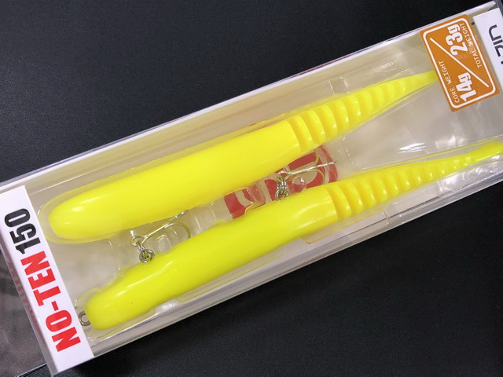
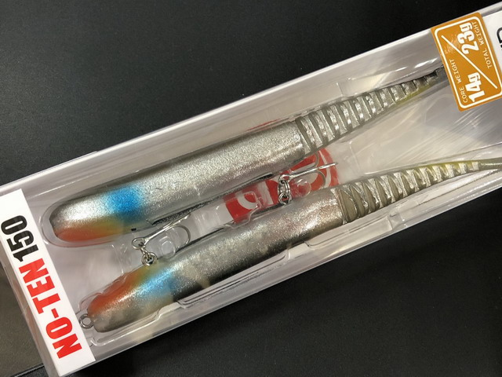
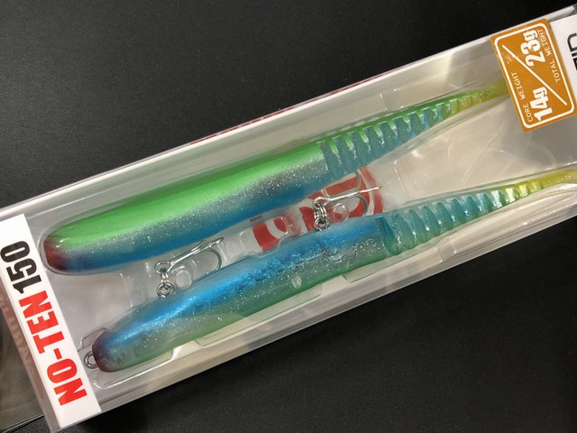
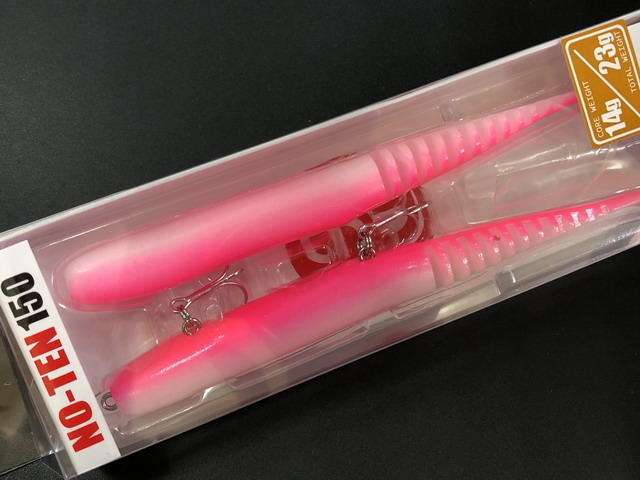
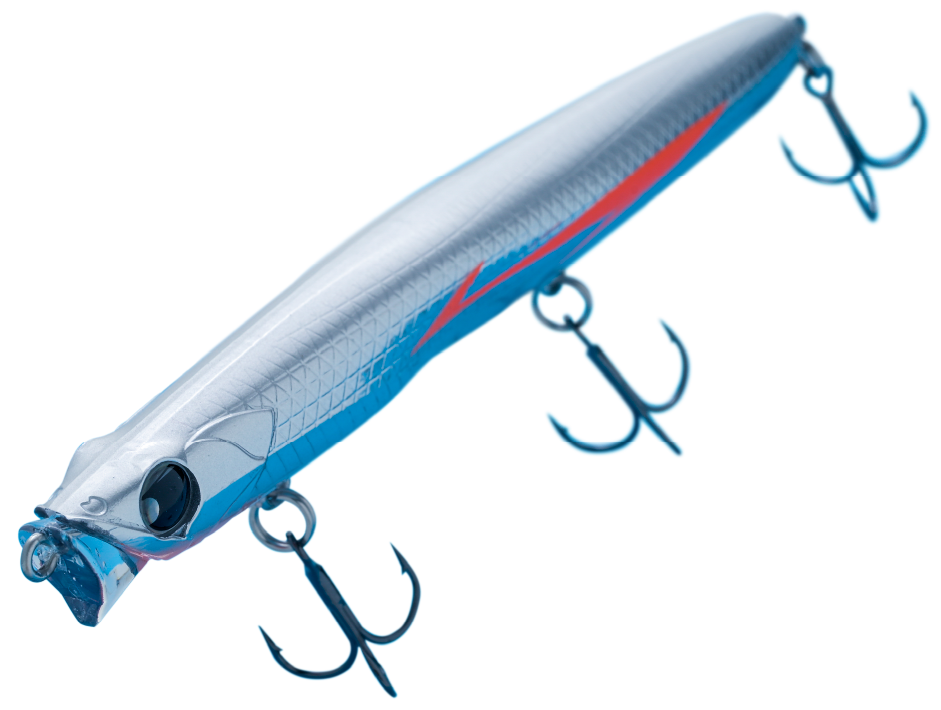

ノーテン150
（NO-TEN 150）
ノーテン150は、マルジンのシーバス用ルアー「ノーテン」シリーズの最大サイズです。
フックの付いたコアにワームのボディを組み合わせた、ワーム系のスティックベイト。ワームならではの柔らかさで水の中を生き物のように「漂う」アクションが最大の特徴で、大型のバチパターンや、コノシロ・コハダを食べている大型のシーバスを狙えます。

画像出典:キングフィッシャー
スペック
- メーカー
- マルジン（marujin）
- タイプ
- ワーム系スティックベイト（コア＋ワーム）
- 全長
- 150mm
- 重さ
- トータルウェイト23g（コアウェイト14g）
- フック
- SAMURAI HOOK #6×2
- カラー
- 全10色
- ターゲット
- シーバス
- 価格
- 2,310円（税込）
▼今すぐチェック

ノーテン150の特徴
ノーテンシリーズ最大の150mm。漂うアクションで大型シーバスを狙う
-
コア＋ワームの組み合わせ
フックと重さを持つ「コア」に、ワームのボディをかぶせて使う。プラグにはない柔らかなボディで、生き物らしい自然な揺らぎを出せる。
-
「漂う」アクション
強く泳がせるのではなく、水の中をふわふわと漂わせるのがノーテンの持ち味。スレたシーバスにも見切られにくく、口を使わせやすい。
-
ベイトを選ばない150mmのシルエット
大型のバチから、10〜15cmほどのコハダ・コノシロまで、大きめのベイトを食べているシーバスに合わせやすいサイズ。
ノーテン150の使い方
流れのある場所の上流側にキャストして、ラインのたるみを取りながらゆっくり巻き、流れに乗せて漂わせるのが基本です。
速く巻いたり強くアクションを付けたりせず、ルアーが流れの中でふらふらと揺れるくらいのスピードを意識しましょう。表層から少し下のレンジを、ゆっくり通すのがコツです。
ノーテン150の得意な状況
河口や干潟の大型バチパターン（エリアによって春〜初夏）や、コノシロ・コハダが入っている秋の河川・港湾で出番です。
ほかのルアーに反応しないスレたシーバスに、漂うアクションで口を使わせられるのが強み。東京湾ではコノシロパターンで爆釣した実績もあります。
ワンポイント
コノシロパターンでも、シーバスが実際に食べているのは10〜15cmほどのコハダサイズのことが多いです。大きなベイトが見えても、まずはコハダをイメージして150mmのノーテンをゆっくり流すと、大きなルアーに反応しない魚も拾えます。ワームは消耗品なので、替えのワームも用意しておきましょう。
ノーテンシリーズの使い分け
| モデル | 全長／重さ | 得意な場面 |
|---|---|---|
| ノーテン ミニ5 | 90mm／10g | 港湾の小さなバチなど、小さいベイトに合わせたい時に |
| ノーテン6 | 120mm／トータル12g（ワーム単体6g） | シリーズの基本サイズ。バチやサヨリなど細長いベイトに |
| ノーテンコア2 | 120mm／トータル9g（コア3g） | コアが3gと軽いモデル。より軽く、ゆっくり漂わせたい時に |
| ノーテン150 | 150mm／トータル23g（コア14g） | 大型バチやコノシロ・コハダなど、大きなベイトに（本記事のモデル） |
| ノーテン150ゼロ フローティング | 150mm／トータル15g（コア6g） | 150mmを浮かせて、表層をよりゆっくり漂わせたい時に |
ベイトの大きさと、漂わせたいレンジ・スピードで選ぶのがおすすめです。重さはキングフィッシャーの商品名の表記によります。
人気カラー
ノーテン150の人気カラーを紹介します。

ナイトチャート夜でもシルエットがはっきり出るチャート。濁りの日にも。

リアルハクシルバーにブルーの背のリアル系。小魚を食べている時に。

リアルサヨリグリーンとブルーのサヨリカラー。サヨリやコハダのパターンに。

シロピン白とピンクで目立つアピール系。夜の定番カラー。
画像出典:キングフィッシャー
▼今すぐチェック
ノーテン150に似ているルアー
-

レクター111F ポップシークルー 詳細はこちら＞リップレスのフローティングミノー。バチ抜けの表層をプラグで探りたい時に。
-
 モアザン スイッチヒッター65S
ダイワ
詳細はこちら＞
モアザン スイッチヒッター65S
ダイワ
詳細はこちら＞
小型のシンキングペンシル。小さなバチや港湾で使いたい時に。